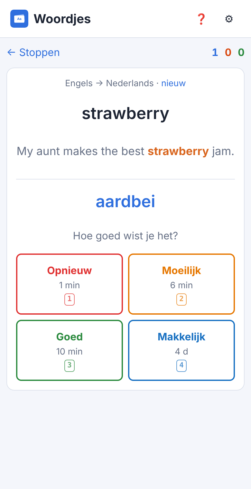
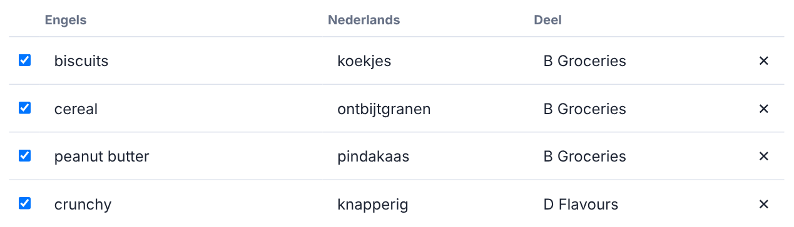
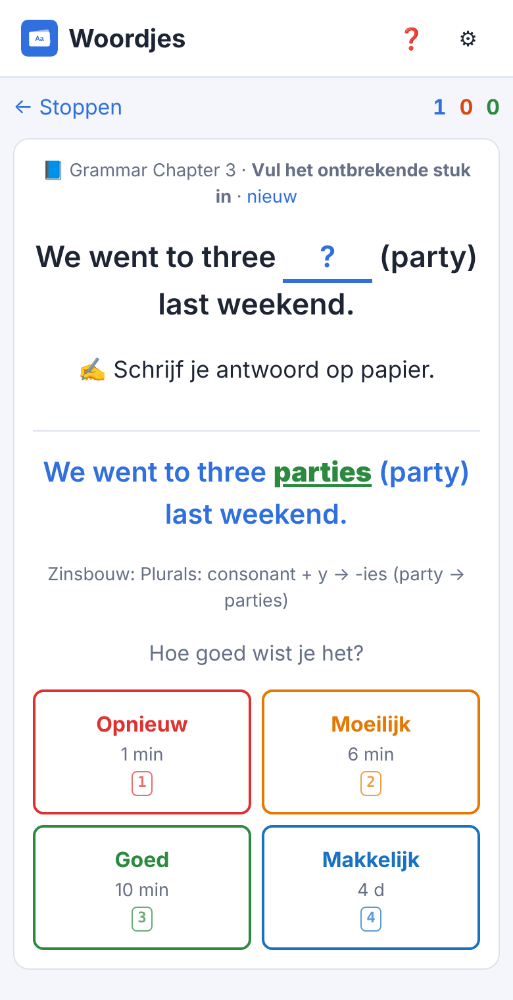
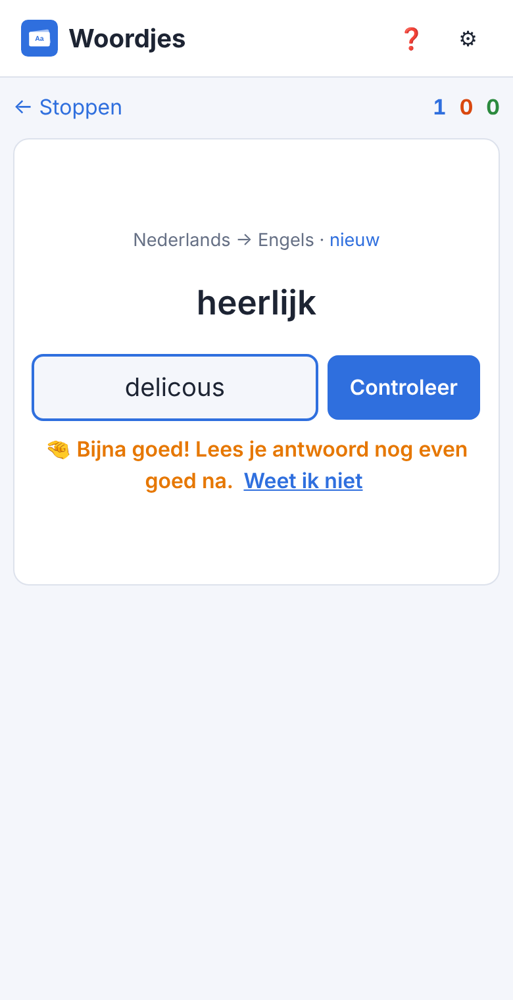
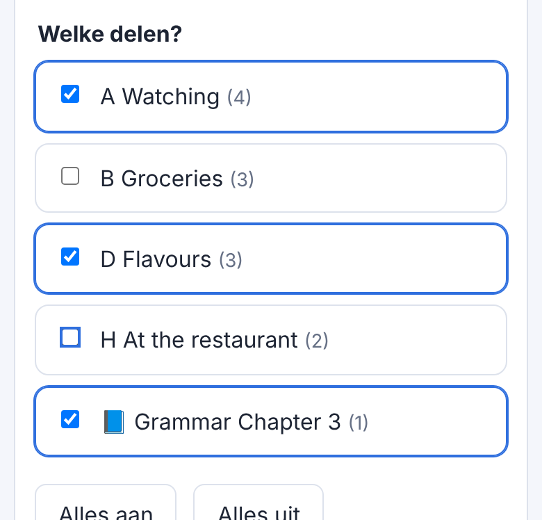

Maak een foto van de woordenlijst, en Claude AI maakt er overhoorkaartjes van. Daarna overhoort de app je precies op het moment dat je een woord bijna vergeten bent. Zo leer je in minder tijd meer woordjes.

Geen lijsten overtikken. Je maakt een foto van de woordjes in je leerboek, en een minuut later ben je al aan het oefenen.
Met de Chromebook-camera of met je iPhone (ook een HEIC-foto, meerdere tegelijk). Scheef of op z'n kant is geen probleem.
Claude AI leest de foto in 10–30 seconden: woord, vertaling en uit welk deel van het boek het komt. Je ziet alle kaartjes in een lijst. Vink uit wat je niet wilt leren en verbeter een foutje.

Per keer kies je: kaartje omdraaien en zelf beoordelen, of het antwoord intypen. Engels → Nederlands, andersom of allebei. En welke delen je wilt oefenen.
Veel leerboeken leren woorden in een zin, met het nieuwe woord in het oranje en rechts de vertaling. De app maakt per oranje woord een kaartje, met de zin erbij als geheugensteun.
Andersom (Nederlands → Engels) staat er een gat in de zin als hint.
Gemaakt voor pubers die liever iets anders doen: korte sessies, weinig tekst, duidelijke knoppen en af en toe een feestje: "Lekker bezig!"
Net als Anki: weet je een woord, dan komt het later terug. Weet je het niet, dan vaker. En nooit langer dan 6 dagen weg, zodat alles vers blijft voor de toets.
Typ je één letter fout of draai je twee letters om, dan krijg je eerst een tweede kans. it's = it is, en lidwoorden of hoofdletters maken niet uit. Per ongeluk op Enter? Dan vraagt de app eerst of je nog iets wilt typen.
Foto van een Stepping Stones-schema of van het grammatica-overzicht (some/any, meervouden, going to, this/that) → Claude verzint oefeningen: vertalen, vraag beantwoorden of gatenzin. Elke herhaling met andere woorden, en de regel staat erbij.
✍️ Antwoord op papier schrijven, omdraaien, zelf nakijken: zo leer je het het best.


De app onthoudt uit welk deel van het boek elk woord komt. Morgen een toets over Flavours? Vink alleen dat deel aan.

Overhoren in de bus op je telefoon, verder op de Chromebook. Woordjes, voortgang en instellingen synchroniseren, ook als de school Google-apps blokkeert. Updates komen vanzelf binnen.
Geen app store en geen abonnement. Het is een website die je als app installeert.
Leest de foto's en maakt de Stone- en grammatica-oefeningen. Met een eigen API-sleutel; je betaalt alleen wat je gebruikt.
Met een gratis GitHub-account en een eigen sleutel (3 minuten werk; de handleiding staat in de app).
Alleen op je eigen apparaat. Klasgenoten zien niets van elkaar. Met Back-up downloaden maak je een kopie.
Ja. Het is gewoon een website in Chrome, en overhoren werkt ook zonder internet.
Engels, Frans en Duits naar Nederlands en terug. Per hoofdstuk in te stellen.
Nee. Sleutels voor Claude of synchroniseren maakt iedereen zelf aan, zodat kosten en gegevens van jezelf blijven.
Claude leest een bladzijde in 10–30 seconden. Daarna is het alleen nog nakijken.
Achter het ❓ zit een uitleg in een paar plaatjes, met weinig tekst.